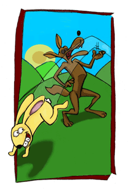

About . . .
Just Above Bone: A Memoir


In my family we tell great love stories.
Our central narrative is about a grandmother who stopped a railroad for the sake of love—not one or two trains, a whole railroad. We also have a story of a young girl who waited by the gate for the guy on the white horse and, one day, he showed up, white horse and all. We also have a World War II romance, complete with love letters, a mid-19th Century shipboard romance, and a more distance tale of lost love and Viking pirates. Given those stories, I can’t imagine the women in my family settling for less than love, which also means some of us spend our lives waiting for love.
Do the stories we tell become the scripts we live or try to live?
This book is a memoir, but it’s more than that. It’s about the power of family stories. It urges the reader to examine her own stories as means of taking control. Stories can be reshaped. In fact, families do it all the time.
Interesting Tidbits
When my grandmother told the story of Cinderella, she always ended with a twist. “We like that prince,” she’d say. “He’s nice. But you got to wonder about that fairy godmother. She got things done.”
A family photo without a story will get tossed. It’s the stories we remember and keep. No need to fight over them. They are better shared.
“Happily ever after . . .” The ending of many fairytales, leaves a huge blank. One of the reasons we seem to have trouble telling our mothers stories is that we don’t have a framework. The storytelling tradition ends women’s stories with “and they lived happily ever after,” which we all know isn’t true, but we don’t seem to know how to fill in that blank. This goes deep. Joseph Campbell linked women to symbols of fertility and reproduction: Isis, Goddess Nut, Virgin Mary, etc. In all mythology he seemed to see no active role. When asked if women had a journey similar to the hero’s journey, he supposedly responded that women were the goal of the hero’s journey—the hearth and home that the hero seeks.
War stories are personal. Veterans don’t bother with broad historical perspectives. They talk about what happened to them. Wars don’t end, they come home.
My family has a recipe for "hard times," called Dump Cake. It's made from ingredients on hand and not bad.
1 qt bottle of any fruit, juice and all
2 cups sugar
1 cup oil
4 cups flour
1 teaspoon salt
1 teaspoon cloves
1 teaspoon nutmeg
1 teaspoon cinnamon
Blend or chop the fruit in a large mixing bowl with sugar and oil. Add dry ingredients. Add nuts and raisens, if desired. Bake 9x13 pan at 350 degrees
50 minutes.

Just Above Bone includes an old family recipe, World War II love letters, photographs, and a folk tale about how Rabbit steals Coyote's eyes. Family stories are entwined with all of these. To ignore that, is to miss a great deal.
My father just before he left for WWII
4/1/1945
I saw things and did things you would never believe because I can hardly believe it, and I saw it happen. It just changes men momentarily into beasts. Why they want to have wars, I can’t figure. . . . Surely there are other ways of settling an argument than to come to blows and kill each other. . . .
When I come home, I’ll be the same old Jared as when I left and love you just as much if not more. That is, if a person can be loved any more than I love you.
4/19/45
Hello Sweetheart,
Here I am again. Do you ever think this war will end? Sometimes I think it will go on forever . . ..
4/23/45
My Dearest Sweetheart,
It won’t be long at all now until you will be eighteen. Do you remember when you were sixteen? I tried to say, “Sweet sixteen and never been kissed,” with a straight face. When you think about it, we have gone together for a long time, but we have the best years of our lives ahead of us. . . .
OK, there have been times that I didn’t know what to do. You just lose all your hopes in everything. Then something will come up to settle things down. Just keep your fingers crossed, Sweetheart.
Jerrie's Our Stories blog: